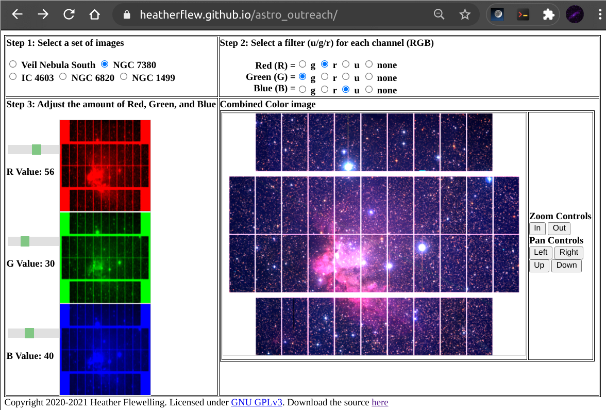
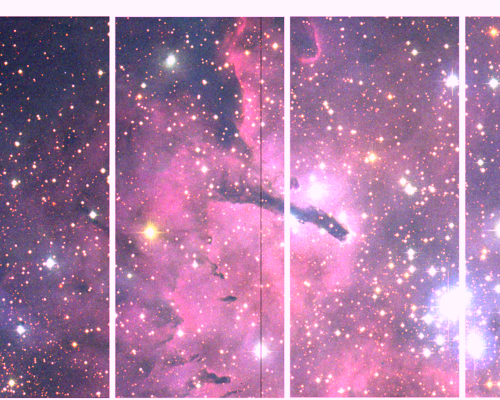
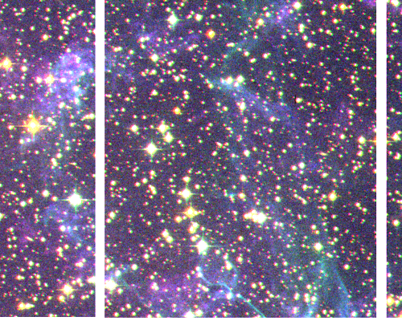
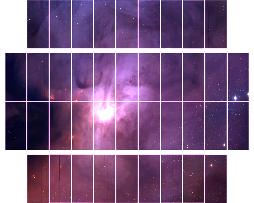
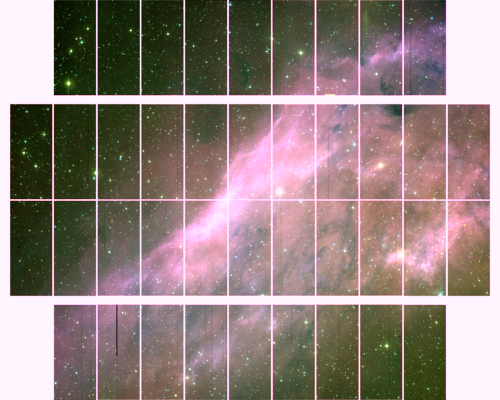

Megacam Image Colorizer: create color images from telescope data using a web browser
Heather Flewelling (heather@cfht.hawaii.edu) / CFHT / Poster for EPO session of CASCA 2021
Best viewed on a laptop / full screen, or download the png png
Abstract
A frequently asked question when doing outreach is “how do astronomers make color
images?”. The answer to this involves explaining how color images are created (with R/G/B channels), as
well as explaining that telescope images are essentially black and white, and often not observed in
wavelengths that the human eye can see. Trying to explain how astronomers make color images, with all
the knobs and dials present in ds9 is quite hard, so I created a very simplified tool to demonstrate how
to make a color image. This tool was designed to allow anyone to make their own color images, using a
selected subset of data. It uses html5 and javascript, and can be loaded on a computer or a mobile
device. It allows the user to select an area of sky (for example: the horsehead nebula), to assign the
different filters to R/G/B channels in the image, and then to adjust the intensity of those channels, to
create a color image. There are currently 2 versions, one for a subset of Pan-STARRS images, and
another for a subset of CFHT MegaCam images.
The Colorizer

4 easy steps:
- Select the set of images
- Assign color filters to R/G/B channels
- Adjust the intensity of each R/G/B channel
- Zoom and pan around to get a nice view
|
Features
- Curated set of images
- Sensible default image intensities
- Easy to zoom/pan and return to defaults
- Easy to save final image as a .png
|
Images used
Veil Nebula South: r/g/u = 2296802p.fits, 2296586p.fits, 2296515p.fits
NGC 7380: r/g/u = 2297034p.fits, 2296846p.fits, 2296839p.fits
IC 4603: r/g/u = 2297008p.fits, 2297001p.fits, 2296994p.fits
NGC 6820: r/g/u = 2300205p.fits, 2300219p.fits, 2300212p.fits
NGC 1499: r/g/u = 2359986p.fits, 2359993p.fits, 2360526p.fits
All exposures available from CADC
Uses
How to install
- GPL-anyone can use, copy, modify
- Use directly from heatherflew.github.io/astro_outreach
- Or install on your web server (uses html5/javascript)
System Requirements (user)
- internet connection
- web browser
- works on phones, chromebooks, laptops, anything with a browser!
Where to use
- Outreach events
- explain how astronomers create color images
- set up a station so anyone can create their own color images
- In undergraduate classes
- removes the barrier of using ds9
- simplifies computer requirements
How it works
I selected fields that were observed in several filters using Megacam. For each field, I used ds9 and set the stretch so that it looked reasonable (for ds9, an example command):
ds9 -scale scope global -scale mode 90 -scale linear -mosaicimage iraf 2296846p.fits -height 4000 -width 5000 -colorbar no -nan black -zoom to fit -saveimage ngc7380_g_big.png -exit
The initial pngs are then converted to smaller sizes (and tiles) using imagemagick's convert command.
From there, it is a simple bit of math (in javascript) to use the intensity on the sliders to adjust the brightness on the image tiles, which are pngs and easy to load and manipulate in javascript. The sliders range from 0-100%. Essentially, if you assign NGC7380 u band to B, NGC7380 g to G, NGC7380 r to R:
R channel = NGC7380_R * r_slider / 100.
G channel = NGC7380_G * g_slider / 100.
B channel = NGC7380_U * b_slider / 100.
Gallery




Here are a few examples of what can be created using this tool.
Acknowlegements
Based on observations obtained with MegaPrime/MegaCam, a joint project of CFHT and CEA/DAPNIA, at the Canada-France-Hawaii Telescope (CFHT) which is operated by the National Research Council (NRC) of Canada, the Institut National des Sciences de l'Univers of the Centre National de la Recherche Scientifique (CNRS) of France, and the University of Hawaii. The observations at the CFHT were performed with care and respect from the summit of Maunakea which is a significant cultural and historic site.
This research used the facilities of the Canadian Astronomy Data Centre operated by the National Research Council of Canada with the support of the Canadian Space Agency.
{kind=link}